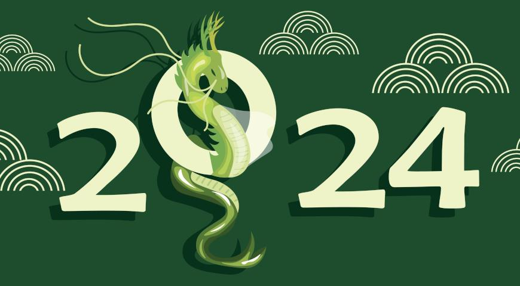

Новий рік 2024: яка тварина, колір та стихія принесуть удачу

Наближається Новий Рік 2024, і згідно із Східним календарем його симовлом стане Зелений Дерев'яний Дракон. Ця тварина в китайській астрології несе в
собі енергію та вважаючись одним із найпотужніших знаків. Дізнайтеся детальніше, як правильно підготуватися до святкування Нового 2024 року та які
кольори принесуть удачу та успіх